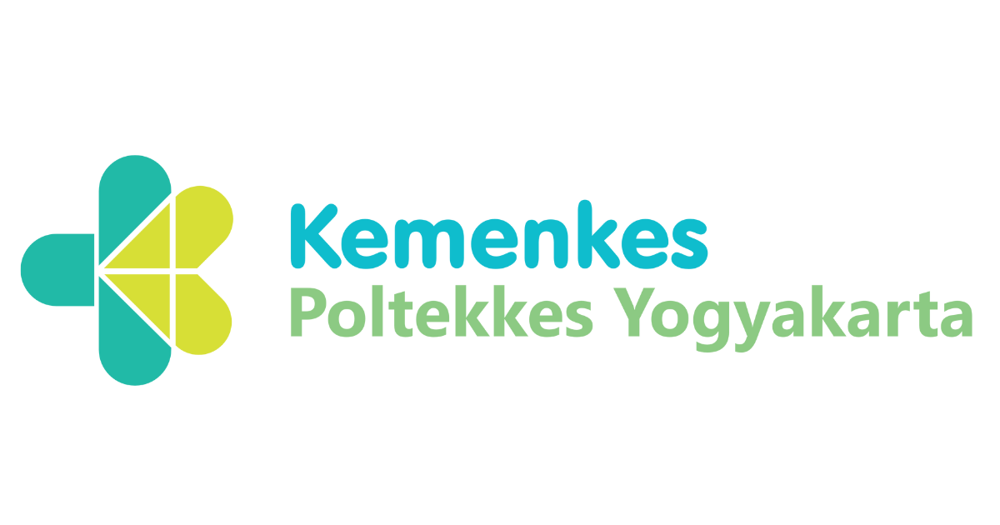

Instansi Terkait


Mengenal lebih jauh tentang Nutri Herbal dan tim kami
Nutri Herbal adalah multi-platform edukasi cetak dan digital yang berdedikasi untuk meningkatkan kesadaran masyarakat tentang pentingnya dalam menjaga kesehatan. Kami percaya bahwa pencegahan adalah kunci utama dalam menjalani hidup yang sehat dan berkualitas.
Melalui video edukasi, informasi mendalam, dan kalkulator interaktif, kami membantu Anda memahami manfaat herbal dan cara penggunaannya secara tepat untuk mencegah penyakit kronis seperti hipertensi.

Menjadi platform edukasi terdepan dalam penyebaran pengetahuan tentang pencegahan penyakit kronis dan memberikan cara penanggulangannya di Indonesia.
Memberdayakan masyarakat dengan pengetahuan kesehatan yang akurat, mudah dipahami, dan dapat diterapkan dalam kehidupan sehari-hari.
Tim profesional yang berdedikasi untuk memberikan informasi kesehatan terbaik
Ahli bidang kesehatan Masyarakat
Dosen Spesialis kesehatan Masyarakat dengan pengalaman 15+ tahun dalam bidang kesehatan.
Ahli Gizi
Dosen ahli gizi berpengalaman mengajar 35 tahun.
Mahasiswa jurusan gizi Poltekkes kemenkes Yogyakarta
Mahasiswa jurusan gizi Poltekkes kemenkes Yogyakarta dengan pengalaman dalam promosi kesehatan.
